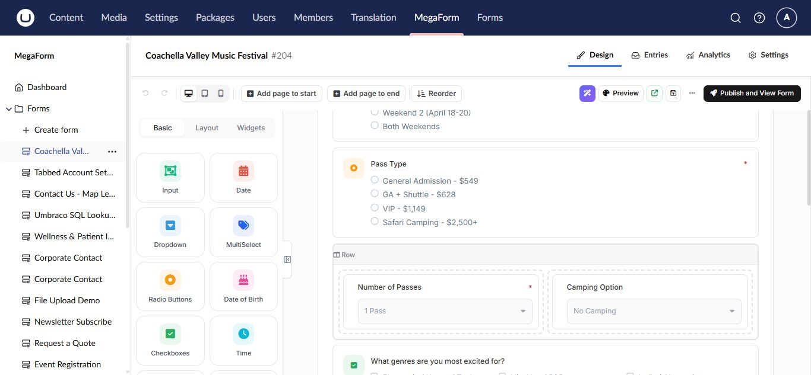
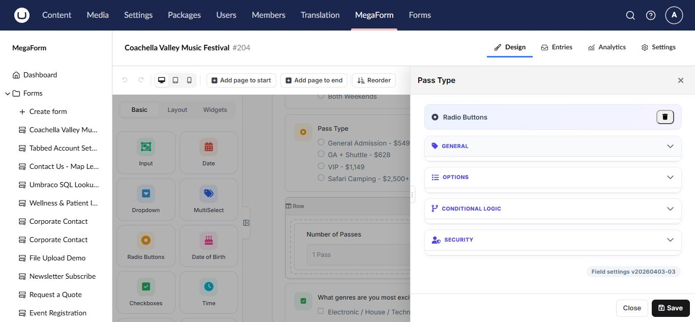

Controls, layouts, and widgets on Umbraco
The builder palette groups form components into Basic, Layout, and Widgets. Choose the simplest control that accurately represents the answer you need.

Basic controls
Basic controls cover text, email, number, phone, date, time, radio buttons, checkboxes, dropdowns, text areas, and common composite inputs.
- Use radio buttons for one choice from a short visible list.
- Use checkboxes for several independent choices.
- Use a dropdown when a single-choice list is long.
- Use the email, number, date, and phone controls instead of plain text when validation matters.
Layout components
Sections, rows, columns, page breaks, headings, and HTML blocks organize a form without creating submitted values. Use a multi-page layout for long forms and group related questions under short section headings.
Widgets
Widgets provide richer behavior such as file upload, signature, rating, maps, data grids, repeaters, payments, CAPTCHA, and database-backed choices. Availability depends on the installed package and license.
Widgets often require additional setup. For example, upload fields need upload or cloud-storage settings, payment fields need a payment provider, and database-backed fields need an approved data source.
Configure a component
Select the component on the canvas to open its properties.

Review General, Options, Conditional Logic, and Security. Give every submitted field a stable key and verify option values before collecting production entries.
Accessibility and mobile checks
- Keep labels visible and meaningful.
- Do not rely on color alone to explain a state.
- Provide help text for unfamiliar inputs.
- Verify keyboard navigation and validation focus.
- Preview desktop, tablet, and mobile widths.
- Avoid placing too many fields in one row on small screens.